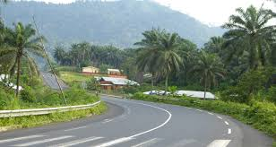
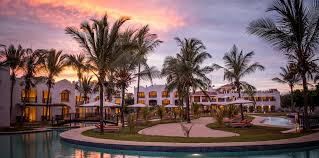

BEST THINGS ABOUT KILIFI COUNTY VISITORS SHOULD KNOW
Security

Peace is the key factor that the people of kilifi county preserve. Most of people living in this county are the Mijikenda and they are widely known to be the most kind people, and fully of hospitaity. In addition the County governmet has set administrative measures to make sure visitors are well protected 24/7.
Infrastructure
Kilifi county has well build roads that join its towns. The roads are well tamacked and are well maintained It has one air strip located in malindi town about 50kms from Kilifi town. In addition kilifi county has good means of transport :- Animal Transpot, Motorvehicles, Train, Water Transport and Airplaines.
Hospitality
The county has well bult lodges, Hotels along side the coast region with well trained worker offering the best and clasic service to all visitors and travellors. well cooked food ranging from white floods to tradional Foods.